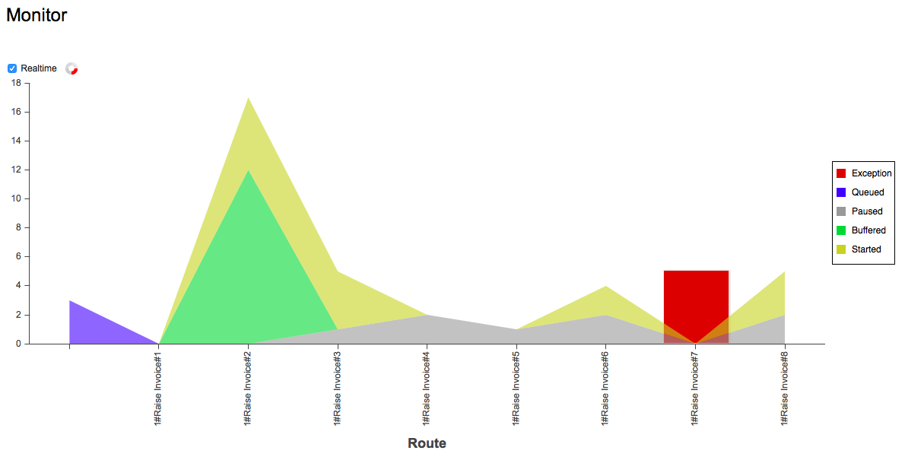

A monitoring page facilitates system activity at a glance. The horizontal axis shows the route names touched by the framework in some way while the vertical axis indicates the message count for a given combination of status and route.

A spinner at the top of the vertical axis indicates that the Services framework is actively processing messages. If the Services framework has yet to execute for the first time the spinner icon is rendered as a sparkler. The lack of an icon at the top of the vertical axis indicates that the Services framework is not currently running.